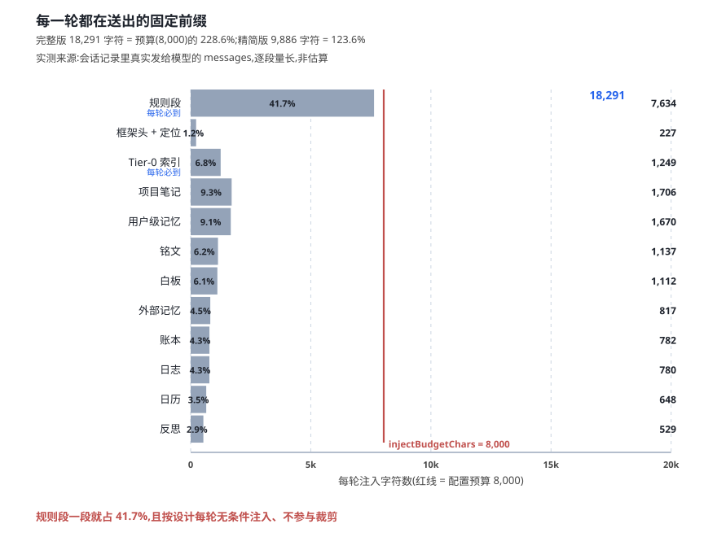

上下文注入的成本，通常按「注入了多少条记忆」来估。这个口径在这套系统上不成立。
原因是结构性的：注入内容里有一半以上与「这一轮有没有值得记起的事」无关。它们是框架头、规则、索引——不管这一轮多安静，它们都会到齐。
一 账不是这么算的
要算清这件事，得先解决数据源问题。估算不可靠，因为它无法反映「预算被逐个分项切走」的真实过程。
可用的最强证据藏在会话记录里：session.v3.jsonl.zstd 保存的就是真实发给模型的 messages。把其中的记忆块取出、按段落标题行切开，量出的就是实际成本。
这份记录有一个技术细节需要先解决：它是多帧 zstd 追加流（一个 5.5 MB 文件含 1,049 帧）。用常规方式解压整个文件，只能得到第一帧——274 字节的会话头。必须逐帧解压。
token 口径采用仓内唯一的估算器：保守口径取「字符数除以二」与「字符数除以四加四」的较大者。比例分母为配置项 injectBudgetChars，本机为 8,000。
二 把每一段切开

| 段 | 完整版 | 精简版 | 每轮在场 |
|---|---|---|---|
| 规则段 | 7,634 | 7,414 | 恒在，桶级豁免裁剪 |
| Tier-0 索引 | 1,249 | 1,249 | 恒在 |
| 项目笔记 | 1,706 | — | 仅完整版 |
| 用户级记忆 | 1,670 | — | 仅完整版 |
| 铭文 | 1,137 | — | 仅完整版 |
| 白板 | 1,112 | 468 | 恒在，额度不同 |
| 外部记忆 | 817 | — | 仅完整版 |
| 账本 | 782 | 253 | 恒在，额度不同 |
| 日志 | 780 | — | 仅完整版 |
| 日历 | 648 | — | 仅完整版 |
| 反思 | 529 | — | 仅完整版 |
| 框架头 + 定位 | 227 | 227 | 恒在 |
| 合计 18,291 ／ 9,886 | |||
三 四点一七成
规则段一段就是 7,634 字符，占完整版的 41.7%。它在精简版里是 7,414 字符，占精简版的 75.0%。
这一段有一个刻意的设计：它不参与裁剪。代码里的桶级豁免是显式的——limitOf('rules') 返回空，即使调用方显式传了上限也会被忽略并留痕。rules-section 的入队优先级是「普通」，但因为桶级豁免，优先级在此不生效。
把规则段与 Tier-0 索引相加——这两段是「每轮必须在场」的部分——合计 8,663 字符，正好是精简版的 87.6%。
换句话说：精简版里有近九成的内容，与「这一轮发生了什么」无关。无论这一轮是深夜的无人值守，还是刚刚打开的一段闲聊，这两段都会如数到场。
四 精简版省下了什么
两档之间的差额是 8,405 字符（约 4,203 token，保守口径）。
| 对比项 | 值 |
|---|---|
| 完整块 | 18,291 字符 |
| 精简块 | 9,886 字符 |
| 差额 | 8,405 字符 |
| 占预算 | 228.6% → 123.6% |
| 每五轮均值（一次完整 + 四次精简） | 11,567 字符/轮 |
| 同上，占预算 | 143.5% |
即便按最省的节奏跑，每轮均值仍超出预算 43.5%。
这里需要对「预算」一词作一处澄清：injectBudgetChars 并不是硬性闸门。它只用于两件事——推导出分项上限，以及写入投递元数据作为「合计是否超预算」的可观测量。超预算不阻止投递。
五 不该动的四件事
既然规则段占去四成，最直觉的动作是「让整块稀疏一些」。这条路走不通，因为它会同时破掉四条已确立的纪律。
| 纪律 | 现状 | 若改「整块跳轮」的后果 |
|---|---|---|
| 规则段每轮无条件注入 | 桶级豁免：limitOf('rules') 返回空，显式上限被忽略并留痕 | 直接推翻该设计 |
| 白板与账本必须进精简版 | 用户裁定：不进精简版，模型在两到五轮后就看不见自己该更新什么 | 白板维护断链 |
| 水位提醒与收尾写账本 | 两者都是完整版路径产生的段 | 触发条件消失 |
| Tier-0 的常驻指引 | 目录层每轮在场是刻意设计：先读索引，再决定深入哪一页 | 模型失去「有什么记忆」的常驻感知 |
收益也支撑不起这个代价：整块跳轮省下的不到一成。真正的成本大头是那两段必须在场的部分——它们不是可以优化的对象，而是这套系统的运行前提。
写在后面的话
「知止而后有定，定而后能静，静而后能安。」
这项测量始于一个很直觉的疑问：深夜无人值守时，这一轮明明什么也没发生，为什么还要送出将近两万字符？
量完之后，答案比预想的朴素：其中四成不是「这一轮的内容」，而是「这个系统的样子」。规则、索引、白板、账本——它们存在的前提就是每轮都在场。抽掉它们，省下的那点 token 远不足以弥补模型失去的方向感。
于是结论从「如何注得更少」变成了「哪些不能动」。文末那四条不值得动的，同时也是四条不能动的。这两者的重合不是巧合。
dsh-auto-memory 项目组 · 2026